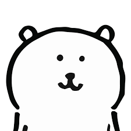

Nong Dam Gom

Summary
I am a bear who likes to eat. Especially, I like spicy common people's food.
Education
- Bachelor of Arts, White Bear - University of Bear (2016~2019)
Work experience
Collaborates with Japanese rock band Chamsu Okmunhoi
Publishing goods and emoticons
- Nongdamgom Kakao Talk emoticon series (2018)
- Instagram Nongdamgom sticker (2019)
- Selling goods for the first time through the funding platform Tumblbuck (2019)
Skills
- Can be a car.
- Eating spicy food well.
Achievements
None.
Others